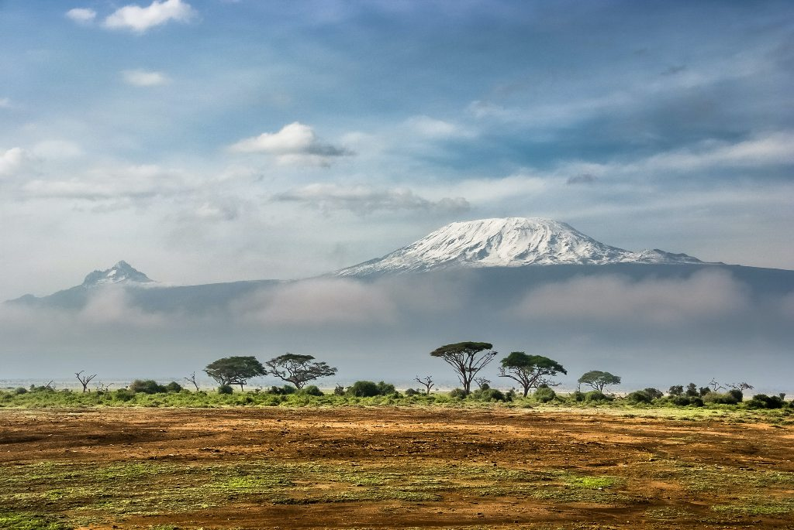

KORONA ZIEMI
KORONA ZIEMI
Kilimandżaro (5895 m n.p.m.)
Kilimandżaro jest jednym z najwyższych samotnych masywów. W jego skład wchodzą trzy szczyty będące pozostałością po wulkanach: Uhuru, Mawenzi oraz Shira. Pierwszy szlak turystyczny na tę górę wytyczono już w 1898 r. Od 1932 r. mapa turystyczna pokazuje także schronisko położone na zboczu Kilimandżaro.
Osoby zdobywające najwyższy szczyt Afryki mogą podziwiać rozbudowany układ pięter roślinnych: początkowe stepy przechodzą w rzadkie suche lasy, które zmieniają się w wiecznie zielone lasy górskie, następnie widać roślinność krzewiastą, łąki górskie i w końcu wieczne śniegi.
Kilimandżaro, fot. Sergey Pesterev, Unsplash